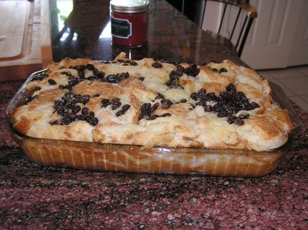

Bread Pudding
Poppa kept 2 versions of this dish.
Follow any recipe, mix and match, or use for inspiration for your own version. That's how Poppa did it.
Bread Pudding

Photo: stu_spivack (CC BY-SA 2.0)
A baked bread pudding of cubed day-old bread in a custard of instant vanilla pudding, eggs, and milk, studded with crushed pineapple, coconut, and raisins and baked in a water bath.
Directions
- In large bowl cream together margarine, vanilla pudding and cinnamon til fluffy. Add eggs one at a time, beat well after each. In another bowl combine milk, undrained pineapples, coconut, raisins and vanilla. By hand, blend mixture into creamed mixture, it will look curdled. Fold in bread cubes. Pour into ungreased 8 x 8 x 2 baking pan. Place baking dish into larger pan on oven rack. Pour hot water into larger pan to a depth of 1 inch. Bake at 325 degrees for about 1 hour to 1 1/4 hours till knife inserted in center comes out clean.
- In a large bowl, cream together the butter or margarine, instant vanilla pudding, and cinnamon until fluffy.
- Add the eggs one at a time, beating well after each.
- In another bowl, combine the milk, undrained crushed pineapple, coconut, raisins, and vanilla.
- By hand, blend the milk mixture into the creamed mixture; it will look curdled.
- Fold in the bread cubes.
- Pour into an ungreased 8 x 8 x 2 baking pan.
- Place the baking dish into a larger pan on the oven rack. Pour hot water into the larger pan to a depth of 1 inch.
- Bake at 325 degrees for about 1 hour to 1 1/4 hours, until a knife inserted in the center comes out clean.
Goes well with
Bread Pudding I

Photo: shawnzrossi (CC BY 2.0)
A simple baked custard bread pudding: bread cubes soaked in an egg, sugar, and milk custard and baked until set.
Directions
- Combine sugar, salt, eggs and vanilla beating only until mixed. Sir in cold milk, bread cubes and hot milk. Mix well. Pour into buttered casserole. Bake in preheated slow oven 325 degrees for 1 1/2 hours or until a knife inserted into pudding comes out clean.
- Combine the sugar, salt, eggs, egg yolks, and vanilla, beating only until mixed.
- Stir in the cold milk, bread cubes, and hot milk. Mix well.
- Pour into a buttered casserole.
- Bake in a preheated slow oven at 325 degrees for 1 1/2 hours, or until a knife inserted into the pudding comes out clean.
Goes well with
https://lizotte.cool/recipe/bread-pudding.html